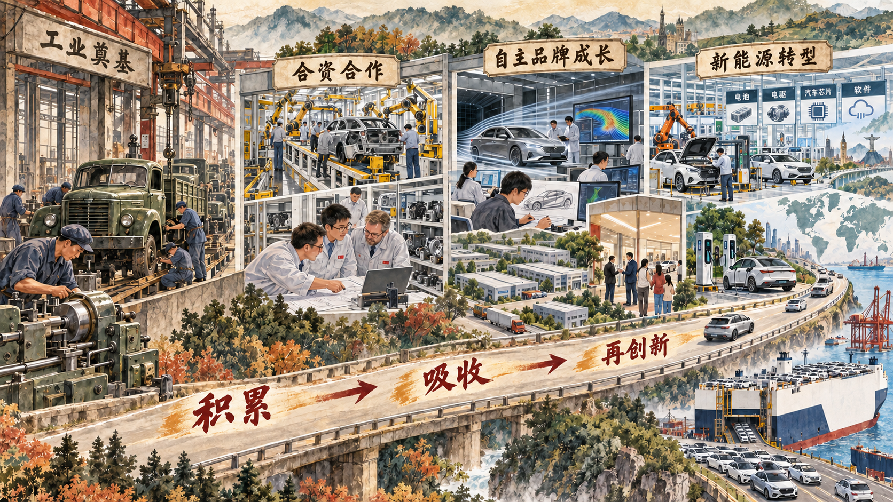

从发展条件变化到发展方式转变
本节回答三个连续问题：我国发展处在什么阶段，新的发展理念解决什么问题，高质量发展用什么标准来判断。阶段判断说明发展条件，理念提供行动指引，高质量发展则把理念转化为可以观察的发展状态。
一、我国进入新发展阶段
一个国家制定发展任务，首先要判断自己处在怎样的历史方位。新发展阶段是社会主义初级阶段中的一个重要阶段，是全面建成小康社会以后，全面建设社会主义现代化国家、向第二个百年奋斗目标进军的阶段。它既建立在长期发展积累之上，也面对需求结构、要素条件、生态约束和国际环境的新变化。
过去较多依靠资源、低成本劳动力和规模扩张的发展方式，在发展水平提高后会遇到新的约束。产业需要从加工装配进入研发、品牌和服务，增长需要更多依靠创新和效率，公共政策需要更好处理区域、城乡、人与自然以及发展和安全的关系。进入新发展阶段，意味着发展任务由解决短缺为主逐步转向提高质量、优化结构和增强能力。
案例研究｜从“能不能造”到“造得好不好”：中国汽车产业能力怎样积累
1956 年 7 月，第一辆国产解放牌汽车下线，中国开始建立自己的汽车制造基础。早期工业建设解决的是从无到有的问题：厂房、设备、工艺、技术人员和配套体系需要逐步形成。改革开放后，北京吉普、上海大众等合资项目引入资本、产品、生产工艺和管理经验，乘用车供给扩大，零部件企业、质量标准和人才队伍也在生产实践中成长。
合资生产能够扩大制造能力，却不会自动产生自主研发和品牌能力。企业需要把引进的工艺知识转化为自己的工程能力，还要持续投入研发、理解消费者、建设供应商网络并承担市场风险。奇瑞、吉利、比亚迪等自主品牌在竞争中逐步成长，汽车产业的核心问题由“有没有整车生产能力”转向“能否形成自主技术、产品和品牌”。
新能源转型再次改变竞争重点。一辆新能源汽车不仅需要车身和整车装配，还要连接动力电池、电驱系统、汽车芯片、传感器、智能座舱、辅助驾驶、充换电设施、软件升级和售后服务。技术路线、能源系统和消费需求相互作用，产业竞争由单个产品竞争扩展为体系能力竞争。

这段历史表明，发展阶段变化会提出不同的产业任务。制造基础、开放合作、自主研发和新能源转型前后相接，创新、开放、绿色和协调由此进入同一条产业能力形成过程。
讨论题
- 合资企业带来的制造经验为什么不会自动变成自主创新能力？
- 判断一家汽车企业“强不强”，你会选择销量、专利、利润、品牌还是关键技术？为什么？
- 新能源汽车把哪些原本相距较远的专业和产业连接在了一起？
资料来源：新华社《第一辆解放牌汽车下线》；国务院办公厅《新能源汽车产业发展规划（2021—2035 年）》；工业和信息化部《2025 年 12 月汽车工业经济运行情况》。
二、贯彻新发展理念是关系我国发展全局的一场深刻变革
发展理念规定用什么眼光看待发展、把力量投向哪里、怎样处理发展中的重大关系。创新发展解决动力问题，协调发展解决不平衡问题，绿色发展解决人与自然和谐共生问题，开放发展解决内外联动问题，共享发展解决社会公平正义问题。
五个方面构成相互联系的整体。新能源汽车技术创新需要电网和充换电基础设施，需要不同地区协作，也要考虑全生命周期的资源环境影响；企业进入国际市场，要以国内产业基础为支撑，还要适应不同市场的规则和需求；产业增长形成的机会和成果，最终要落实到人民生活改善。只突出一个方面，容易把系统问题简化为单项指标。
完整把握，要求同时理解五大发展理念；准确把握，要求辨明每个理念所针对的问题；全面贯彻，要求把它们贯穿发展全过程和各领域。教学分析时可以使用“问题—理念—机制—结果”四步法：先识别现实矛盾，再判断主要对应哪项理念，接着分析政策和主体怎样行动，最后观察发展质量发生了什么变化。
新闻摘录｜DeepSeek-R1 为什么引起国际科学界关注
2025 年 1 月，《自然》报道，中国团队发布的 DeepSeek-R1 引起科学界关注。研究人员看重的不只是模型在推理任务上的表现，还包括模型较低的使用门槛以及开放技术报告和模型权重所带来的研究机会。更多研究者能够检查模型、复现实验、比较方法，并在已有成果上继续开发。
报道援引多位研究者的观察，指出开放模型可以扩大参与者范围。科研团队不必都从头训练大型模型，可以把资源投入具体科学问题、方法改进和应用验证。一个创新成果由此可能形成工具、研究者和开发者相互促进的生态。
这则报道把创新质量从“单个产品能力”扩展到知识传播、研究复现和应用生态。衡量创新，需要同时观察原创性、工程效率、开放协作、实际应用和持续迭代能力。
讨论题
- 一个 AI 模型更便宜、更开放，为什么可能改变创新参与者的范围？
- 如果模型参数公开，科研创新还需要哪些难以复制的能力？
资料来源：Elizabeth Gibney, “China’s cheap, open AI model DeepSeek thrills scientists,” Nature, 2025-01-23。中文翻译与节译。
三、以新发展理念引领高质量发展
高质量发展不是在增长之外另加一个目标，而是回答增长的目的、动力、结构、效率和可持续性。教材从供给、需求、投入产出、分配和宏观经济循环多个角度展开：供给要有完整产业体系、创新能力和产品质量；需求要回应人民群众多样化、升级的需要；投入产出要提高劳动、资本、土地、资源和环境效率；分配要形成合理关系；宏观循环要使生产、分配、流通、消费顺畅衔接。
这也解释了为什么高质量发展可以概括为从“有没有”转向“好不好”。“好不好”不是主观印象，而要结合创新能力、生产效率、产品服务质量、收入与机会、生态影响、循环畅通和安全韧性作出判断。
高质量发展为现代化建设提供物质技术基础，回应人民对美好生活的需要，也关系重要产业、基础设施、战略资源和重大科技等领域的安全。实际工作中要统筹质的有效提升和量的合理增长，以效率变革、动力变革促进质量变革。
参考资料｜GDP、劳动生产率和全要素生产率分别说明什么
GDP 记录一定时期内一个经济体生产的最终产品和服务的市场价值，适合观察经济活动的总规模和增长速度。它不能直接表示产品质量、收入分配、生态环境和生活满意度。
劳动生产率通常用产出与劳动投入之比表示，观察每名劳动者或每个工时创造多少产出。技术进步、设备改善、劳动者技能、管理和产业结构都会影响这一指标。
全要素生产率关注在劳动和资本投入之外，技术、组织、制度和资源配置效率对产出的综合影响。它不是可以直接“数出来”的单项产量，而是依据经济模型估算的剩余部分。三项指标分别观察规模、单位劳动产出和综合效率，合在一起能够形成更完整的发展判断。
资料来源：国家统计局《国内生产总值（GDP）核算》；OECD, Measuring Productivity: OECD Manual。